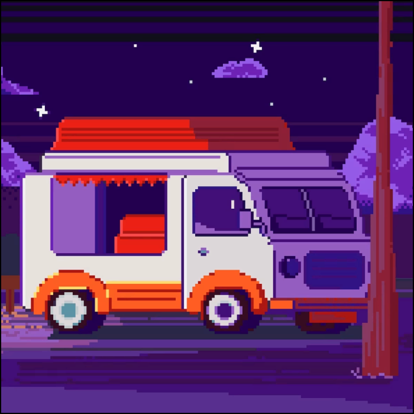

Фритрек и нулевой спринт: Подготовка к работе
</HTML>

Это было самое начало пути. На этом этапе важно было проникнуться основами и настроиться на учёбу. И, возможно, подумать, как новые знания могут повлиять на ваше будущее.
Всё было запутанно и туманно. До этого я думал, что программирование - это очень сложно, и вряд ли смогу его потянуть.